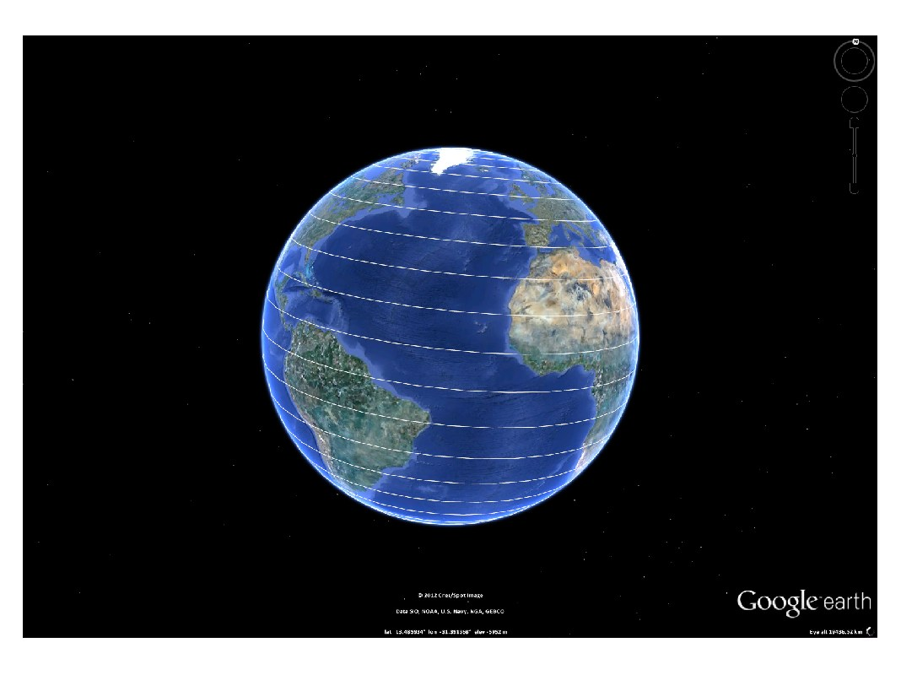

kml
Creates an instance of the kml toolbox, providing access to all its functionality.
Contents
Syntax
k = kml('title');Description
k = kml creates an instance of the kml toolbox, from which any of the available plots can be created. This class-based toolbox allows you to create many different plots in Google Earth, by automatically creating the required xml-based kml files without user interaction. With it, you can create:
- line plots, scatter plots
- 2D and 3D contours
- 2D and 3D polygons
- quiver plots
- write text in a given point
- place 3D models
- overlay images
- transfer more complex figures as images
- folders, subfolders,... to aggregate and categorize plots
If you enjoy it, just drop me an email at kml@rafael.aero saying for what you're using it :).
Example
% Create a new kml object k = kml('my kml file'); % Create a sample plot inside the kml t = linspace(0,360,1000); k.plot(30*t, 90*cosd(t/2)); % Save the kml and open it in Google Earth k.run;
This is the result of running this example:
This file is part of the kml toolbox. Copyright 2012 Rafael Fernandes de Oliveira (rafael@rafael.aero)